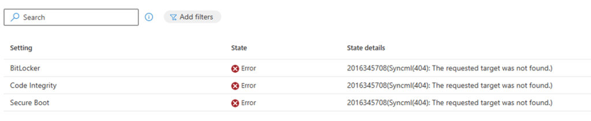
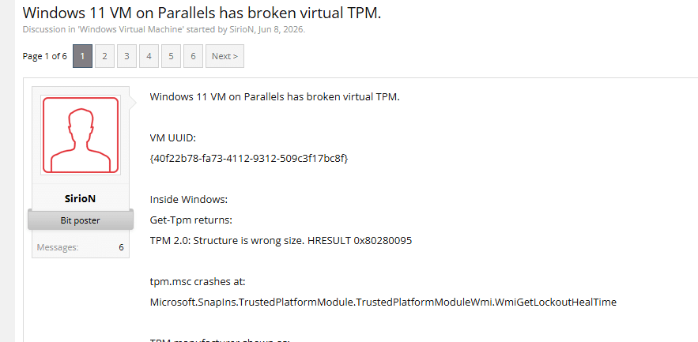
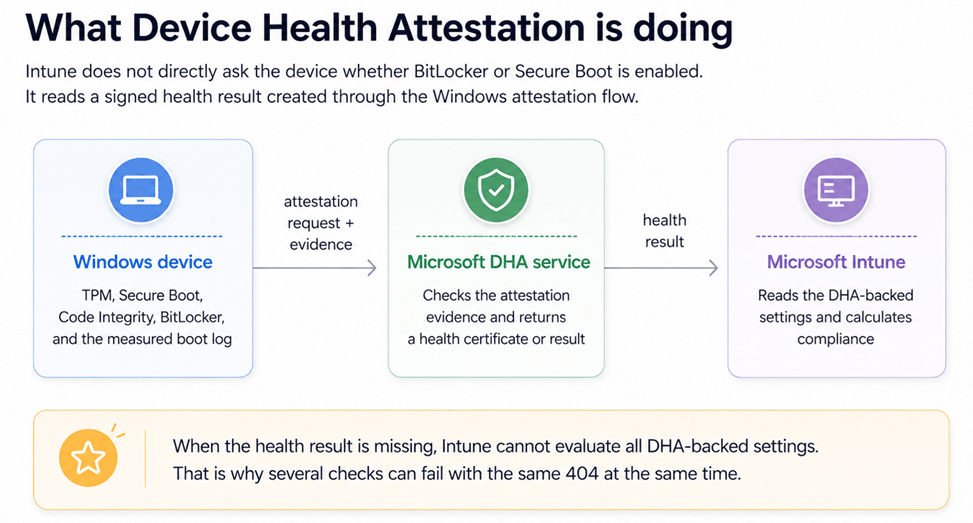
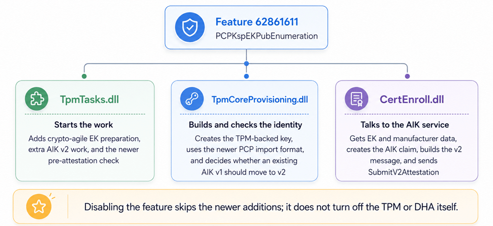
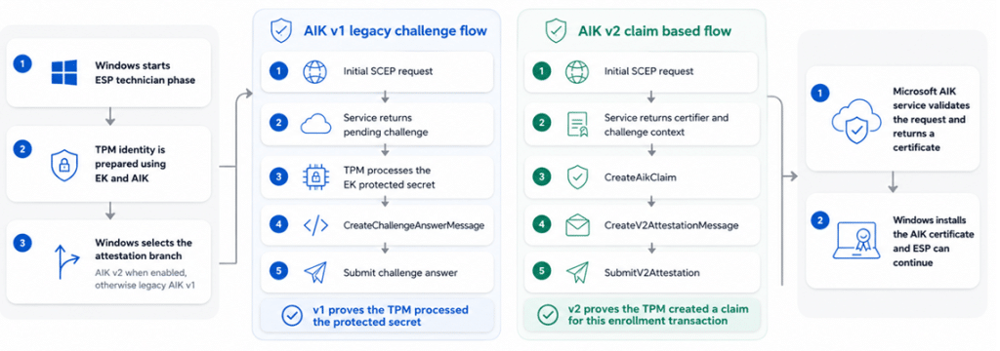
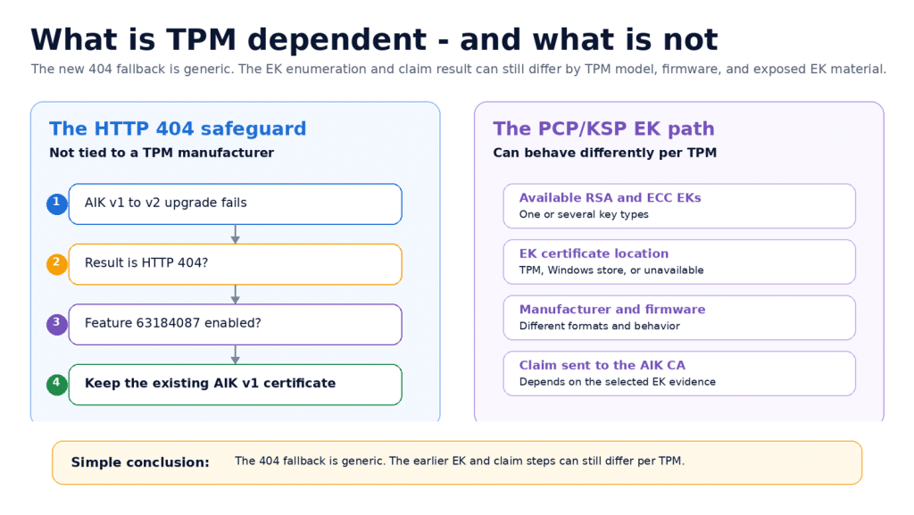

Healthy Windows devices suddenly showed BitLocker, Secure Boot, and Code Integrity as noncompliant with error 2016345708. The cause was a new TPM and AIK v2 path controlled by feature 62861611, which Microsoft later adjusted in KB5101684.
Three red errors and a NonCompliant Device: 2016345708.
It started with a Reddit post that looked painfully familiar. BitLocker was enabled. Secure Boot was enabled. Code Integrity was enabled. Yet Intune marked all three as errors with the same 2016345708, or SyncML 404, result.
{kind=link}

The device was not failing three separate security checks. Windows had failed earlier while trying to retrieve the Device Health Attestation Certificate result that all three checks depend on. The health certificate stayed at 0xFFFF, and the Tpm-HASCertRetr task did not complete.

The visible compliance errors were downstream symptoms of one missing Device Health Attestation result.
I had seen this 404 / 2016345708 NonCompliant Issue before
Back in 2023, I wrote about the same 2016345708.error after chasing a Device Health Attestation certificate that never arrived. That older case taught me not to troubleshoot BitLocker and Secure Boot separately when they fail together, causing the device to become noncompliant. The first place to look is the health-attestation certificate, the TPM task, and the trust chain behind it.
Older investigation: Are You There Intune? It’s Me, Health Attestation Certificate
The new Reddit report looked almost identical. The TPM was ready, the Endorsement Key certificate was present, and the certificate chained to Nuvoton TPM Root CA 2111. Even so, the chain test returned invalid, and the health certificate never landed. A Hyper-V virtual machine on the same build worked without a manufacturer EK certificate at all. That was the first sign that Windows was not simply checking whether an EK certificate existed. It was using the material in a different way.
Then Parallels showed the other side of the problem
At the same time, Parallels users started reporting that Windows could no longer talk to the virtual TPM after the July build. Get-Tpm returned “Structure is wrong size.” Windows Hello and BitLocker broke, and the pre-attestation health check said a critical component had failed.
The Parallels failure was not the same as the Nuvoton certificate-chain report. One involved a virtual TPM that could not satisfy the new Windows calls. The other involved a physical TPM with real certificate material. But both appeared when Windows entered the same newer TPM identity path.


IT1431577 connected the field reports to Windows
Microsoft then published advisory IT1431577. It confirmed that newly enrolled or newly recovered Windows devices could be marked noncompliant when builds 26100.8875 or 26200.8875 were installed before Intune enrollment completed. When looking at the code… EnabledByDefault –-> Where did the Controlled Feature Rollout idea go?

Microsoft described the root cause as a Windows code regression that affected Device Health Attestation and Intune compliance evaluation (2016345708). The advisory did not mention AIK v2, Nuvoton, Parallels, or feature 62861611. It did confirm the part that mattered most: this was not an Intune policy mistake. The Windows build had changed the attestation flow during the exact enrollment window where the failures appeared.

Microsoft later recommended KB5101684
Microsoft first reduced the impact with an Intune service-side change. The follow-up message then made clear that a complete fix also needed a Windows client update. Microsoft recommended KB5101684 Preview and said the update included the Windows-side correction and related quality improvements.

The follow-up to IT1431577 recommended KB5101684 as the client-side remediation.
The public KB now says the update addresses newly provisioned or recovered devices that could stay incorrectly noncompliant after MDM enrollment. That explains the symptom. The interesting part was finding what Microsoft changed underneath it. Let’s take a quick step back and let’s find out what Microsoft enabled by mistake and how they fixed it
Why one missing certificate causes the 2016345708 Compliance Issue
Device Health Attestation is the bridge between the device and Intune. Windows collects measured boot and TPM-backed evidence. Microsoft’s health-attestation service checks that evidence and returns a signed result. Intune reads that result when it evaluates settings such as BitLocker, Secure Boot, and Code Integrity.
When the health result is missing, Intune cannot read those settings through the DHA channel. The settings can be enabled on the device and still show a 404 in Intune because the shared attestation result is not there.


Intune reads a signed DHA result rather than trusting a simple local yes-or-no answer.
The Hidden Feature behind the new Attestation path
The binary work pointed to feature ID 62861611. Its internal WIL name is PCPKspEKPubEnumeration. The name sounds narrow, as if it only lists the TPM Endorsement Key. The code shows something wider.
When the feature is enabled, Windows prepares a new PCP/KSP view of the TPM’s public identity, checks or creates extra AIK v2 material, uses a newer way to import the TPM-created key, and selects newer pre-attestation logic. When the feature is disabled, Windows keeps using the older”WORKING AKA NOT BROKEN” path.

The release binary connects the WIL name PCPKspEKPubEnumeration to feature ID 62861611.
| In plain words This feature does not turn the TPM on or off. It chooses whether Windows adds the newer TPM identity and AIK v2 work on top of the established attestation path. |
The same Attestation feature has a different job in each DLL
The easiest way to understand 62861611 is to stop treating it as one single function. It is one switch that is checked by several components. TpmTasks decides which work should run. TpmCoreProvisioning creates and judges the TPM identity. CertEnroll performs the certificate transaction with the Microsoft AIK service.


TpmTasks starts the work, TpmCoreProvisioning prepares the identity, and CertEnroll performs the certificate transaction.
What TpmTasks adds when the feature is enabled
The TPM maintenance worker always performs the normal Windows AIK work. With PCPKspEKPubEnumeration enabled, it adds TpmCheckCreateWindowsAiksV2, EnsureCryptoAgileEkMaterial, EnrollAikCertificateV2Internal, and the newer PreAttestationHealthCheck path.
That is why the same switch can affect both Autopilot AIK enrollment and the later Device Health Attestation task. The feature changes the preparation that happens before both trust flows continue.
What crypto-agile EK material means
The EK material store prepares public TPM identities that Windows can open through the Microsoft Platform Crypto Provider. The code checks for three named key objects: WindowsEK_RSA_2048, WindowsEK_ECC_NIST_P256, and WindowsEK_ECC_NIST_P384. (rings a bell??? TPM Attestation 0x81039001: When EKRSA3072 Breaks Autopilot)
Windows first opens the PCP EK store and lists the key names already present. Missing supported keys are imported. It then asks each key object for SmartCardKeyCertificate. This is public identity material only; the EK private key never leaves the TPM.
The important detail is that certificate lookup is best effort. If a key cannot be opened or the certificate property cannot be read, the code logs the problem and continues. Windows can therefore finish the local preparation step with incomplete certificate material and fail later when the AIK or DHA service needs that identity.
| Why that matters Parallels can fail because the virtual TPM does not expose the identity in the form the new path expects. A physical Nuvoton or STMicroelectronics TPM can reach the same feature path with a certificate that later cannot be matched or trusted. The trigger is shared even when the exact break is different. |
The feature also changes the AIK certificate flow
An AIK is the TPM-backed identity Windows uses for attestation. The older flow proves that the TPM could process a challenge prepared for it. The newer AIK v2 flow creates a signed claim for the current enrollment transaction and sends it through SubmitV2Attestation.


The established AIK challenge flow and the newer claim-based AIK v2 flow share the same trust goal but use a different proof. TpmCoreProvisioning also checks the certificate that already exists. In the captured run, it returned Decision 1 and Reason 5. In simple words, Windows found a working AIK v1 certificate but decided that it should be upgraded through the v2 flow.

What the observed AIKv2 flow looks like
The full trace showed Windows checking the platform AIK, setting AIKEnrollV2 to 1, contacting the Microsoft AIK service, creating the AIK claim, building the v2 attestation message, and sending it through SubmitV2Attestation.
In the successful capture, the final message was 9,374 bytes and the service returned a 3,990-byte certificate response with PkiStatus 0. That proves the client and service completed the v2 transaction. It does not reveal Microsoft’s private server code or every field inside the encrypted message.

Disabling 62861611 made DHA work again
Before the preview update was available, I asked for one simple A/B test: disable feature 62861611 with ViVeTool, reboot, and run the attestation flow again. On the affected device, DHA started working.
That result was more useful than another generic task retry. Nothing had repaired the TPM, changed the compliance policy, or replaced the Intune object. Windows had simply stopped entering the newer PCP/KSP and AIK v2-capable path.

The feature state changed the result on the same device, which tied the regression to the new path.
| Controlled diagnostic test used before KB5101684 vivetool /disable /id:62861611 shutdown /r /t 0 |
| Not a permanent servicing method ViVeTool was useful here because it proved the feature relationship. It is not Microsoft’s supported long-term deployment fix, and a forced override can remain after Microsoft changes the official feature configuration. |
KB5101684 kept the new design and made it safer
The before-and-after DLL comparison answered the biggest question. Microsoft did not remove PCPKspEKPubEnumeration. Feature 62861611 remains the outer switch for the new PCP/KSP EK path in build 8973.
Instead, Microsoft added two smaller controls inside and after that path. One gives CertEnroll a compatibility choice between the current crypttpmeksvc APIs and new functions with an _Old suffix. The other protects an existing AIK v1 certificate when a very specific v1-to-v2 upgrade fails with HTTP 404.

Feature 61744298 chooses the current or _Old EK APIs
The updated CertEnroll.dll imports two versions of the same EK operations. It can call the current functions to find the best EK, read EK and TPM manufacturer information, and create the AIK claim. It can also call matching functions with an _Old suffix.
Feature 61744298 selects which set is used. This is not the same as disabling 62861611. Windows is still inside the new PCP/KSP workflow, but Microsoft can choose a more compatible implementation for the EK and claim calls.
| Simple view Feature 62861611 chooses the wider new path. Feature 61744298 chooses which version of the crypttpmeksvc helper APIs is used inside that path. |
Feature 63184087 keeps AIK v1 after one specific 404
The updated TpmCoreProvisioning.dll and TpmTasks.dll contain a new message: “V2 CA unavailable for V1->V2 upgrade; keeping existing V1 cert.” The branch only runs when the existing certificate is in the v1-to-v2 upgrade case, feature 63184087 is enabled, and the result is 0x80190194, which is HTTP 404.
Before the change, that failed upgrade could break the transaction even though the device already had a usable AIK v1 certificate. After the change, Windows keeps the existing v1 certificate and continues instead of throwing away a working identity.
| What the new fallback does not do It does not disable AIK v2. It does not help a device with no existing AIK v1 certificate. It also does not catch HTTP 429 throttling or every local TPM compatibility problem. |
Why the fix can still behave differently per TPM
The new HTTP 404 safeguard is not tied to Nuvoton, Infineon, Intel, AMD, RSA, or ECC. The code only checks three things: Windows is performing the AIK v1-to-v2 upgrade, feature 63184087 is enabled, and the enrollment result is HTTP 404. When those conditions match, Windows keeps the existing AIK v1 certificate.
The steps before that fallback are different. Feature 62861611 works directly with the Endorsement Keys exposed by the TPM. One device may expose only an RSA EK. Another may expose RSA and ECC keys. The EK certificate can be stored in the TPM, found in Windows, or be unavailable. TPM firmware and manufacturer data can also be returned in slightly different ways.
That is why feature 61744298 matters. The updated CertEnroll.dll can use the current crypttpmeksvc functions or the newly exposed _Old compatibility functions. The selector is global, but the result can still differ per device because both implementations are working with whatever EK and manufacturer information that TPM returns.
In simple words, the 404 safety net is generic, but the route leading to the AIK request can still be TPM dependent. That also explains why one TPM model may recover with the compatibility APIs while another device can still fail with HTTP 429 or with EK evidence the Microsoft AIK service cannot use.


The 404 fallback is generic, while the earlier EK selection and claim-building steps can still behave differently per TPM.
Summary of what actually happened
The July build enabled more than a new AIK message. It enabled a wider TPM identity path. Windows started exposing RSA and ECC EK public material through PCP/KSP, preparing extra AIK v2 identities, using a newer key-import format, and selecting a newer pre-attestation check.
That wider change explains why the reports looked different. The Nuvoton case showed a physical TPM certificate and chain that did not lead to 2016345708 compliance issues. Parallels showed a virtual TPM that could not answer the new Windows calls correctly. The AIK v2 trace showed a device that reached the Microsoft service and was throttled. Different break, same newly enabled path.
Disabling 62861611 brought the tested device back to the established flow and restored DHA. Microsoft’s July preview update did not simply turn the feature off. It kept the new design, added a choice between current and _Old EK service APIs, and added a narrow safety net that keeps a working AIK v1 certificate when a v1-to-v2 upgrade receives HTTP 404.